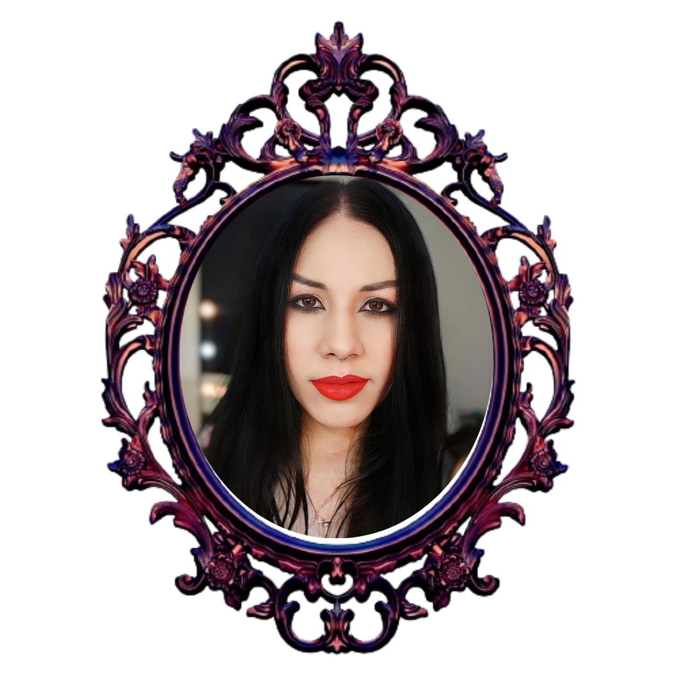

Bem-vindo ao Divas Tattoo
Um evento único e vibrante que celebra a arte da tatuagem e a individualidade de cada participante.
Este concurso não é apenas uma competição de beleza, mas uma plataforma onde a criatividade, a expressão pessoal e a arte corporal se encontram em um espetáculo inesquecível.
Em breve mais informações para nova edição!
Contato
Instagram: @divatattooce
Email: divatattooce@gmail.com
Diva Tattoo
O concurso Divas Tattoo CE é uma competição de beleza para Mulheres Tatuadas à nível Nordeste, que tem como objetivo representar a mulher tatuada. Ela sempre marca presença em convenções, abrilhantando, embelezando e admirando a arte no contexto dos eventos de tatuagem.
Por muito tempo, concursos desse tipo foram motivo de piada, não sendo levados a sério e nem recebendo a devida importância. No entanto, concursos de Miss e de beleza feminina são bastante significativos, pois existem mulheres dedicadas e empoderadas que desejam mostrar sua importância não só através da beleza, mas também por meio de seu empenho e trabalho em outras áreas.
A importância do Diva Tattoo CE em um evento de tatuagem e modificação corporal também está relacionada ao aumento do público, pois tanto a organização quanto as finalistas trabalham diretamente na divulgação do evento. Isso motiva em vários aspectos, como trazer clientes para os profissionais tatuadores e atrair um nicho de pessoas curiosas que possam se interessar pelo evento.
O Diva Tattoo nasceu da ideia de dar visibilidade à arte na pele, apresentando os trabalhos de profissionais como tatuadores e piercers ou admiradores da arte.
As mulheres que participam são apaixonadas pela arte da tatuagem, seja por amor, por trabalharem nessa área, em estúdios, ou por terem familiares diretamente envolvidos nesse nicho. É um projeto criado por mulheres que amam o universo da tatuagem e que sempre sentiram falta de um esforço feminino mais significativo em eventos de tatuagem, apesar de 40% do público desses eventos ser feminino, em um campo predominantemente masculino.
O concurso Divas Tattoo não segue padrões físicos e éticos rígidos. Nosso objetivo é aproximar mulheres e aumentar a sororidade entre elas. Embora seja uma competição, nosso projeto visa o crescimento e empoderamento feminino.
- Diva Tattoo Caninde 2018
- Diva Tattoo Caninde 2019
- Diva Tattoo Caninde 2023
Edições Anteriores
Diva Tattoo Caninde 2018
- 1° Lugar: Isabelle Chrystine
- 2° Lugar: Xênia Melo
- 3° Lugar: Rebeka Alcântara
O Diva Tattoo teve sua estreia durante o evento Expotattoo Canindé 2° edição, que aconteceu nos dias 24 e 25 de novembro de 2018, no Hotel Jardineira Park, na cidade de Canindé. O evento foi organizado pelo Ralado Tattoo.
.jpg)
.jpg)
.jpg)
.jpg)
.jpg)
.jpg)
.jpg)
.jpg)
.jpg)
.jpg)
.jpg)
.jpg)
.jpg)
Diva Tattoo Caninde 2019
- 1° Lugar: Cynthia Alves
- 2° Lugar: Jairinna Soares
- 3° Lugar: Rochelle Sousa
.jpg)
.jpg)
.jpg)
.jpg)
.jpg)
.jpg)
.jpg)
.jpg)
.jpg)
.jpg)
.jpg)
.jpg)
.jpg)
O Diva Tattoo já no seu consecutivo ano, no evento Expotattoo Canindé 2° edição, que aconteceu nos dias 24 e 25 de novembro de 2018, no Hotel Jardineira Park, na cidade de Canindé. O evento tambémfoi organizado pelo Ralado Tattoo.
Diva Tattoo Caninde 2023
Após o período do Covid, nos mantermos firmes e fortes para continuar com nosso evento. A 3° edição ocorreu novamente no evento Expotattoo Canindé, que aconteceu nos dias 24 e 25 de novembro de 2023, no Hotel Jardineira Park, na cidade de Canindé. O evento também foi organizado pelo Ralado Tattoo.
O Evento foi oficializado em Trajes de Gala e tivemos 3 finalistas, que irão fazer parte da divulgação da nossa próxima edição em 2024.
.jpeg)
.jpeg)
.jpeg)
.jpeg)
.jpeg)
.jpeg)
.jpeg)
.jpeg)
.jpeg)
- 1° Lugar
- 2° Lugar
- 3° Lugar
Presença da nossa equipe em outros Eventos
Tattoo Week SP 2018
Na foto acima: Evelyne Almeida com Bruna Barros, em Tattoo Week SP 2018
Para uma melhor experiência para nosso evento, o comitê organizador compareceu ao Tattoo Week SP 2018, em São Paulo, a fim de buscar inspirações para melhorar ainda mais o nosso concurso. Visando sempre o bem estar das nossas participantes, e como o propósito de ser um atrativo agregador para os eventos de tatuagem.
Myrella Maria, que compunha nosso comitê organizador foi jurada no Miss Tattoo em Belo Jardim Pernambuco em 2016, na convenção de tatuagem em João Pessoa de 2017 e em 2018 em na convenção de Tattoo em Campina Grande, Paraíba. Evelyne Almeida foi jurada no Divas Tattoo Fortaleza 2018
Formulário de Inscrição
Instagram: @divatattooce
Fotos
Fotos das edições:

Equipe
 |
Evelyne Almeida
|
 |
Jairinna Soares
|
|  |
Mayara Soares
|
Patrocinadores
A Importância dos Patrocinadores para o Projeto Divas Tattoo
O projeto Divas Tattoo é muito mais do que um concurso de beleza; ele é uma celebração da arte corporal, da expressão individual e da cultura da tatuagem. Para que um evento dessa magnitude se concretize e alcance seu pleno potencial, o apoio de patrocinadores é essencial.

Os patrocinadores desempenham um papel vital na viabilização do projeto Divas Tattoo, fornecendo não apenas recursos financeiros, mas também apoio logístico e visibilidade. Com sua contribuição, é possível garantir uma produção de alta qualidade, desde a estrutura do evento até a premiação das participantes.
Esses recursos permitem que o concurso seja realizado em um ambiente adequado, com toda a infraestrutura necessária para acolher o público e destacar as participantes de forma profissional.
Além disso, os patrocinadores trazem consigo a credibilidade de suas marcas, o que agrega valor ao evento e fortalece sua imagem perante o público. Esse respaldo é fundamental para atrair um público diversificado e aumentar a cobertura da mídia, ampliando o alcance do projeto e, consequentemente, o impacto cultural e social do Divas Tattoo.
Em troca, os patrocinadores têm a oportunidade de associar suas marcas a um evento que celebra a criatividade, a diversidade e o empoderamento. Eles se posicionam ao lado de um movimento que valoriza a arte e a individualidade, engajando-se diretamente com um público-alvo apaixonado e leal.
Essa parceria proporciona uma visibilidade única, reforçando o compromisso das marcas com a cultura da tatuagem e o apoio a iniciativas que promovem a inclusão e a expressão pessoal.
Portanto, o apoio dos patrocinadores não apenas possibilita a realização do Divas Tattoo, mas também contribui para a promoção da arte da tatuagem e para o fortalecimento da comunidade que a cerca. Juntos, patrocinadores e organizadores constroem um evento que transcende a competição, tornando-se um verdadeiro marco na cultura da tatuagem e no empoderamento feminino.
Seja você também um patrocinador, e faça parte da nossa história!
Através do email: divatattooce@gmail.com